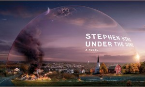

Sob a Redoma
Sob a Redoma (título original: *Under the Dome*) é um romance de ficção científica e suspense escrito por Stephen King, publicado pela primeira vez em novembro de 2009. A história é ambientada na pequena cidade de Chester's Mill, que é misteriosamente isolada do mundo externo por uma barreira invisível, mas impenetrável.
Sinopse
Chester's Mill é uma cidade pequena e pacífica até que, repentinamente, uma barreira transparente e inexplicável a isola completamente do resto do mundo. O "dome", como a barreira é chamada, impede a passagem de pessoas, veículos e até mesmo o ar, o que faz com que a cidade rapidamente comece a sentir os efeitos do isolamento. Os habitantes da cidade precisam enfrentar o colapso da ordem social e seus próprios medos enquanto tentam sobreviver sob a redoma.
A obra explora questões sobre o poder, a corrupção e os efeitos do isolamento em uma sociedade limitada por recursos. O caos se instala rapidamente, levando os personagens ao limite da moralidade.
Informações Gerais
| Gênero | Ficção Científica, Suspense |
|---|---|
| Data de Lançamento | 10 de novembro de 2009 |
| Autor | Stephen King |
| Número de Páginas | 1.074 (edição original) |
| Ambientação | Chester's Mill, Maine |
| Principais Personagens | Dale "Barbie" Barbara, Julia Shumway, Big Jim Rennie, Junior Rennie |
| Adaptações | Série de TV (2013–2015) |